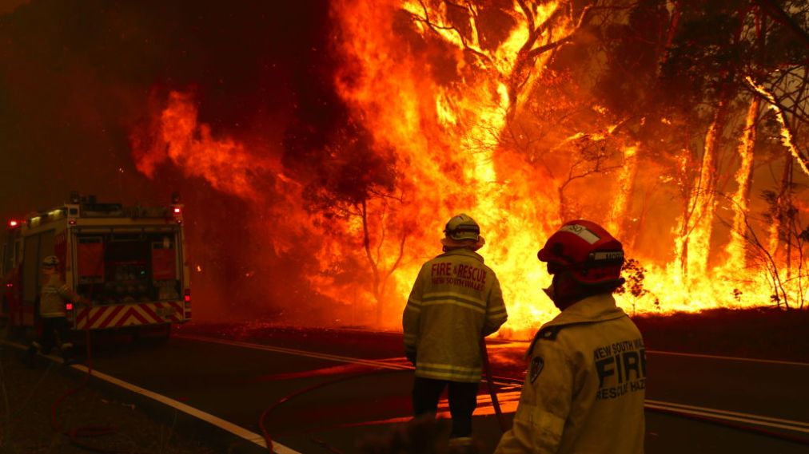
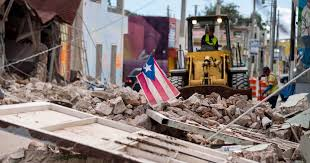

Cenzoic Era
About Us
Natural Disasters have become an increasingly prevalent problem in our world. From wildfires in the Amazon Rainforest to earthquakes in Puerto Rico, many ecosystems have been displaced as a result of these occupancies. People and wildfires have been victims not only to natural disasters as they occur, but also the aftermath of these events. Much resource and time is spent trying to rescue those in distress. In the process, much of those resources are wasted due to lack of foresight of the intended area, while volunteers and first responders are left injured when entering unstable locations.
Our organization, Cenozoic Era 1, plans to aid in the recovery and rescue process. Instead of sending volunteers and first responders into unstable areas blindly, we plan to send drones into impacted areas to survey locations and potentially identify people or wildlife in distress. Once identified, the drones will capture the state and condition of said individuals. The collected info is then sent to our home base. This way, volunteers and first responders will be able to know the condition of sites they are entering beforehand and will be able to know what materials are needed to take along in their missions.
Essentially this process will save money, time, and lives. Responder won’t have to carry unnecessary load that will weigh them down. Only resources that are needed will be carried along. The rescue period will be shortened since responders will know exactly where to go. Although we cannot prevent Natural Disasters, Natural Disasters can not prevent us.
Wildfires in Australia

Earthquakes in Puerto Rico
